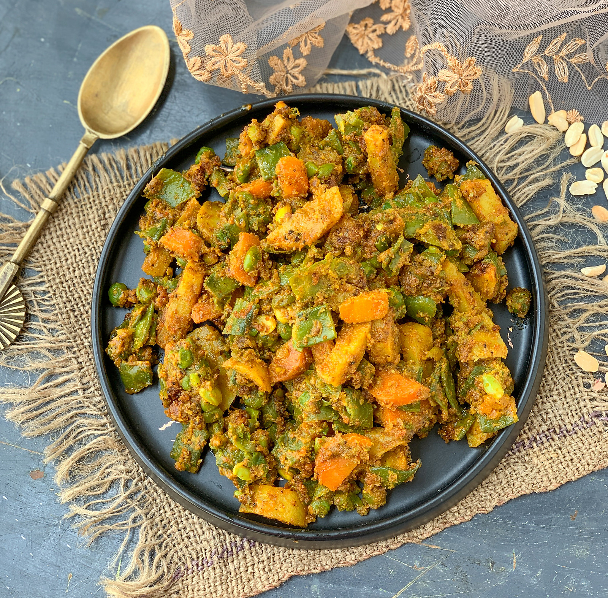

Indian Vegetable Bhaji

India Mix Vegetable Spicy Sabji
Bhaji is a fry, so do not add water and you will really enjoy the drier variety of an Indian curry. Great with
breads like naan or paratha, or with rice and daal (Indian lentil soup).
Ingredients
-
4 large potatoes, finely chopped
- 1 cup cauliflower florets
- 1 carrot, finely chopped
- ½ cup fresh green peas
- 2 tablespoons vegetable oil
- 1 large onion, chopped
- 1 teaspoon cumin seed
- 1 teaspoon black mustard seed
- 2 whole bay leaves
- 4 green chile peppers, chopped
- 3 cloves garlic, chopped
- 2 teaspoons minced fresh ginger root
- 1 teaspoon ground cumin
- 1 teaspoon curry powder
- ½ teaspoon chili powder (Optional)
- 1 sprig cilantro leaves for garnish
Steps to make recipe
- Place the potatoes, cauliflower florets, carrot, and peas into a microwave-safe bowl, cover with plastic wrap,
and microwave on High until the vegetables are very hot and starting to soften, about 2 minutes. Remove the
plastic wrap, and drain the vegetables in a colander.
- Place the vegetable oil in a large skillet, and heat over medium heat. Cook and stir the onion until it turns
golden, about 10 minutes, and stir in the cumin seed, black mustard seed, and bay leaves. Cook and stir until the
seeds begin to sputter, about 30 seconds, and then add the green chiles, garlic, and ginger. Cook and stir until
the garlic begins to brown, about 1 minute.
- Stir in the ground cumin, curry powder, and chili powder, and then add the partially cooked potatoes,
cauliflower, carrot, and peas. Cook and stir until the vegetables are tender and coated with spices, about 30
minutes. Sprinkle with cilantro leaves.
Back to Main Page